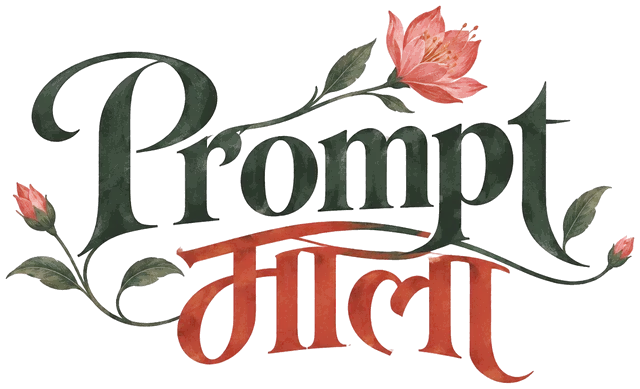

One question leads to another, and suddenly there’s a whole mala of them.
Prompt माला is my personal collection of AI conversations, reimagined with flowers, garlands, and a little Indian nostalgia. Because apparently, even my curiosity needs a desi makeover.
10 Jun – 5 Oct 2026